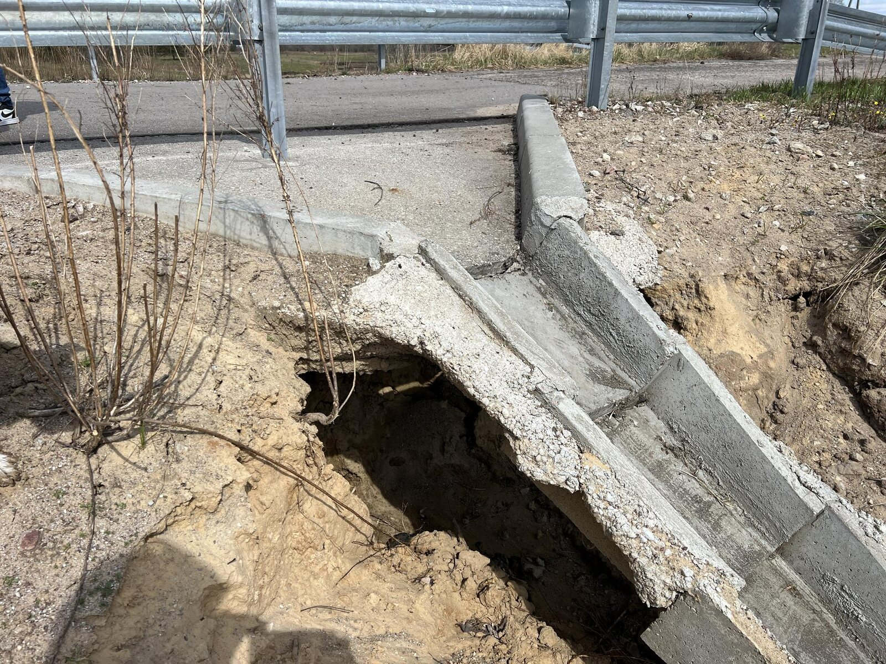
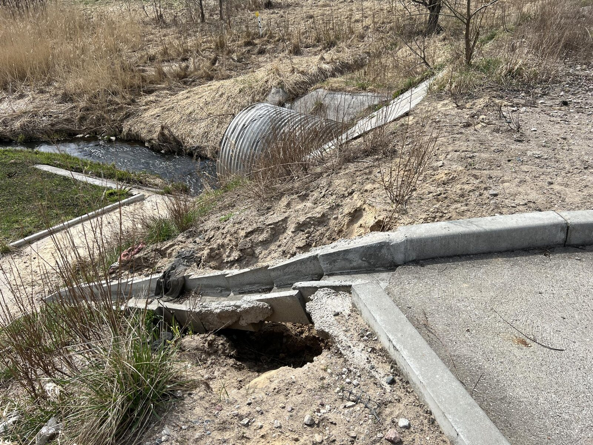
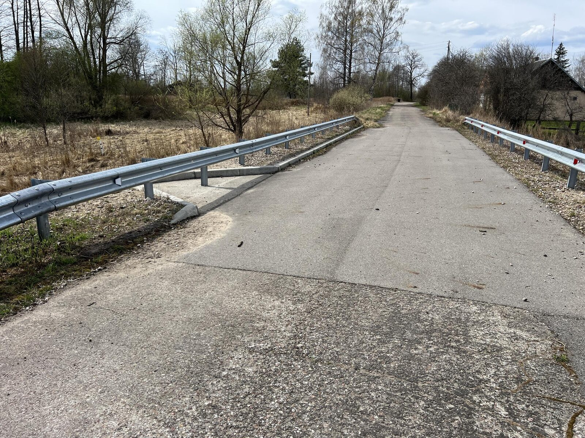
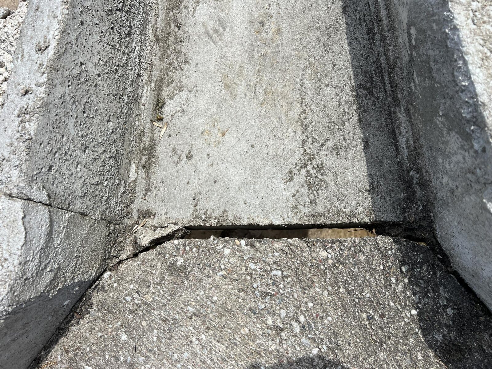
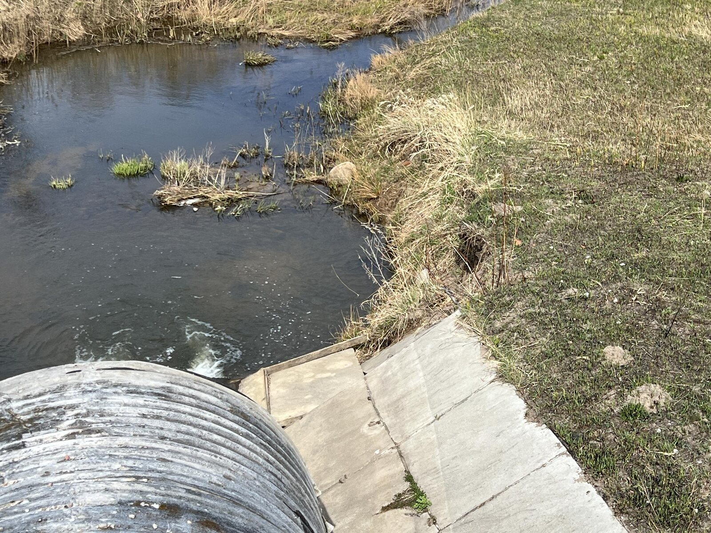

ул. Речная · Тушино
Аварийное состояние мостового сооружения
Зафиксированы признаки разрушения мостового сооружения, включая размыв основания и деформацию конструкции.
Обращение направленоОписание ситуации
Мостовое сооружение, расположенное на улице Речной, построено взамен исторического каменного арочного моста. На текущий момент наблюдаются признаки разрушения, которые могут указывать на нарушения при строительстве или недостаточную защиту от воздействия воды.
Зафиксированные признаки
- размыв грунта под основанием;
- образование пустот под бетонными элементами;
- частичное разрушение конструкции;
- трещины и деформация дорожного покрытия;
- риск дальнейшего разрушения.
Фотоматериалы





Документы
Обращение направлено в администрацию Неманского муниципального округа.
Статус
Обращение направлено: 22.04.2026
Способ: почтовое отправление (заказное)
Статус: ожидается ответ